扉页
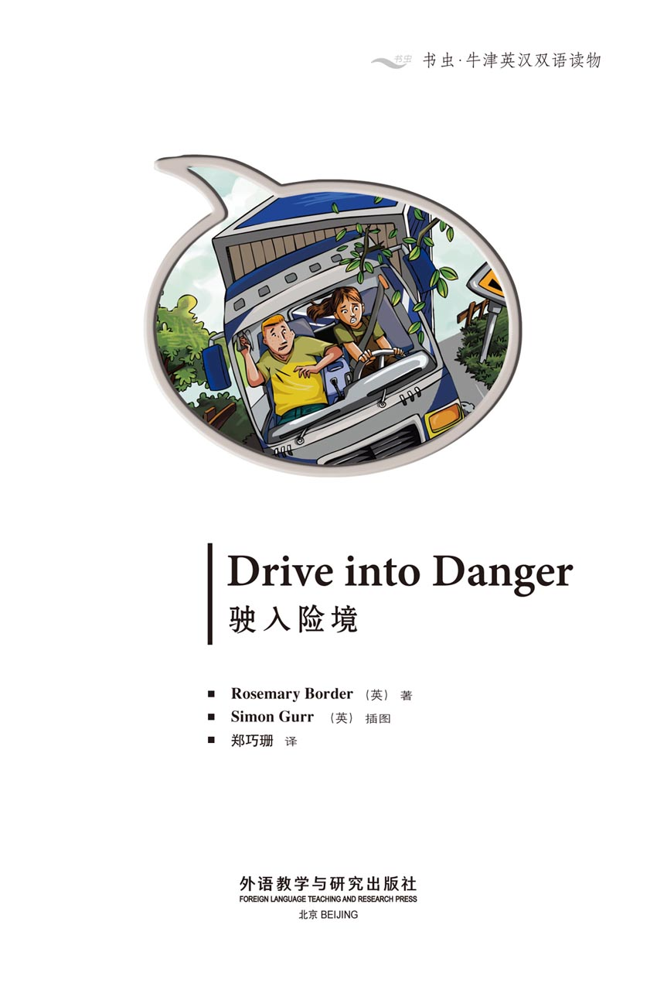
版权页
京权图字：01-2013-7797
Published by arrangement with Oxford University Press for sale in the People's Republic of China only and not for export therefrom. This edition is for sale in the mainland of China only, excluding Hong Kong SAR, Macao SAR and Taiwan.
© Oxford University Press 2008
Oxford is a registered trademark of Oxford University Press
图书在版编目（CIP）数据
驶入险境：英汉对照／（英）博德（Border, R.）著；（英）格尔（Gurr, S.）绘；郑巧珊译．—北京：外语教学与研究出版社，2013.11
（书虫·牛津英汉双语读物）
书名原文：Drive into danger
ISBN 978-7-5135-3770-4
Ⅰ．①驶… Ⅱ．①博…②格…③郑… Ⅲ．①英语—汉语—对照读物②短篇小说—英国—现代 Ⅳ．①H319.4：I
中国版本图书馆CIP数据核字（2013）第272368号
出版人 蔡剑峰
责任编辑 张红岩
封面设计 蔡 颖
出版发行 外语教学与研究出版社
社 址 北京市西三环北路19号（100089）
网 址 http://www.fltrp.com
版 次 2013年12月第1版
书 号 ISBN 978-7-5135-3770-4
制售盗版必究 举报查实奖励
版权保护举报电话：（010）88817519
内容简介
内容简介
马克·迈尔斯有很多卡车。这些卡车驶遍全欧洲，将各种货物运往不同的地方。
今天早上，马克和儿子安迪遇上了麻烦。他们有一位司机加里·斯莱特胳膊受伤，没法开车了。偏偏还有重要的事情要办——一批桌子必须从英格兰运到法国，又有一批葡萄酒必须从法国运回英格兰。不过金·帕克能帮上忙——她会开卡车。
加里说：“1点钟左右，你们得在这儿的这个卡车服务站停上15分钟。”他在地图上打了个叉——他表现得十分热心。
这样，金在马克儿子安迪的陪同下，驾着卡车前往法国——但同时也驶入了险境……
DRIVE INTO DANGER
DRIVE INTO DANGER
Mark Miles has many trucks. They drive all over Europe taking different things to different places.
But today, Mark and his son Andy are having a bad morning. One of their drivers, Gary Slater, has a bad arm and cannot drive. And there are important things to do – some tables must go from England to France, and some wine must come from France to England. But Kim Parker can help – she can drive a truck.
Gary says, 'At about one o'clock, you need to stop for 15 minutes at this truck stop here.' He puts an X on the map – he is being very helpful.
So Kim drives the truck to France, with Mark's son Andy – but it is a drive into danger...
目录
1 A truck without a driver
1
A TRUCK WITHOUT A DRIVER
Mark Miles and his son Andy are having a bad morning.
'Where's Gary?' says Mark. 'He isn't usually late. The truck is ready. Everybody's waiting.'
Then Gary Slater comes to the office. He is ill. 'I've got a bad arm, Mr Miles,' says Gary. 'I'm very sorry, but I can't drive today.'
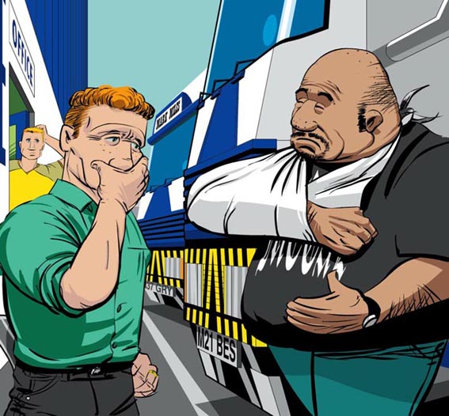
Just then Kim Parker arrives. She is a student. Her father is one of Mark's drivers. She is working in Mark's office in her holiday.
'Good morning, Mr Miles,' says Kim. 'What can I do first?'
'Can you drive a truck?' says Mark with a little laugh. 'I've got tables in Faversham and wine in Lyon – and no driver!'
'Yes, I can drive a truck,' says Kim. 'I've got a licence.'
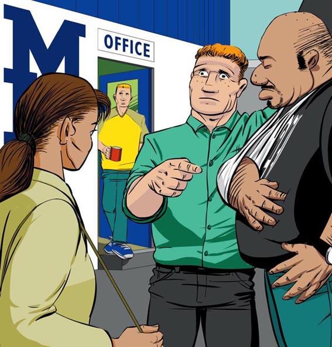
'Wonderful!' says Mark. He is looking happier. 'Have you got a passport?'
'Of course. It's at home.' Suddenly Mark is much happier.
'OK. Can you take a truck to France? Here is some French money and these are all the papers – read them carefully.'
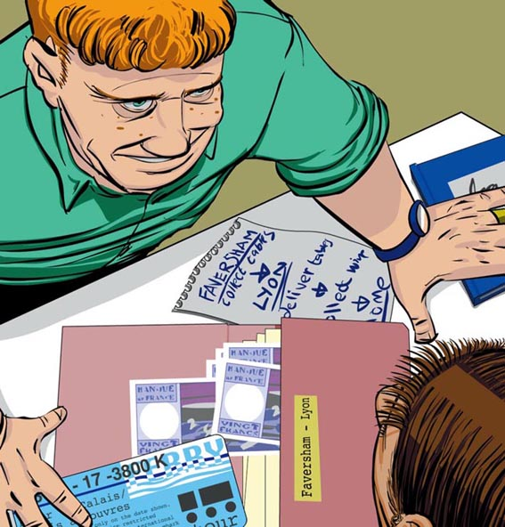
'Can I go too, Dad?' asks Andy. 'I can't drive a truck, but I can drive a car and read a map – and I can speak French. Perhaps I can help Kim.'
'And you want to go to France. I know! OK, you two. Run home and get your passports, your overnight bags and some sandwiches. There are sleeping bags in the truck, and a mobile phone too. When you come back, go and look at the map with Gary. He drives to France every week. He can tell you about it.'
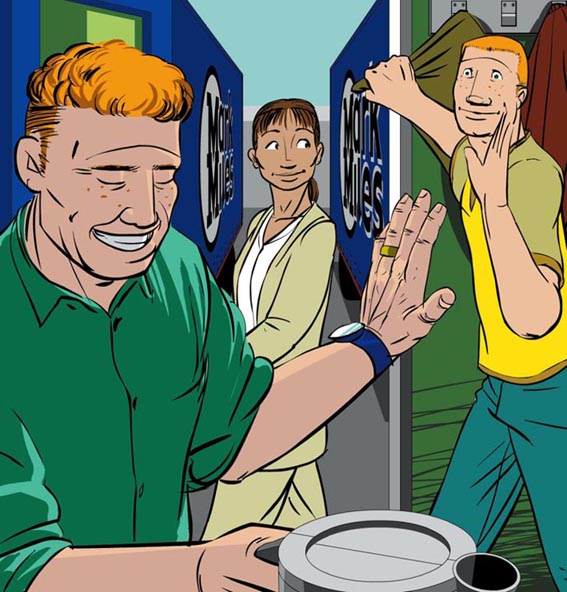
2 Gary makes a phone call
2
GARY MAKES A PHONE CALL
'Get the tables from the shop at Faversham,' says Gary. 'Then take the ferry from Dover to Calais. At Calais, look for signs to the A26 motorway. It's a good, fast road.
'Listen – this is very important. All truck drivers must stop for 45 minutes in every 4 hours.'
'I know,' says Kim.
'OK. There are truck stops on every French road. At about one o'clock, you need to stop for 15 minutes at this truck stop here.' He puts an X on the map.
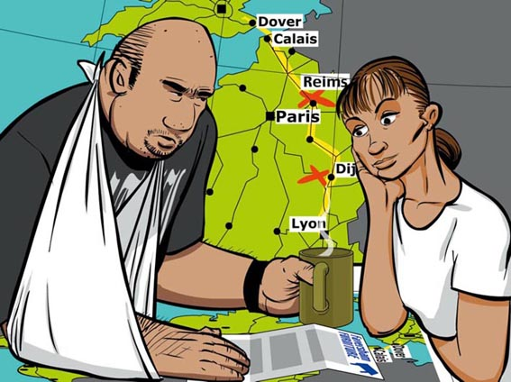
'Don't stay in the truck; get out, walk about and get some coffee. You don't want to go to sleep when you are driving. At about four o'clock you must stop again here, near Dijon.' Again Gary puts an X on the map.
'The café at the truck stop makes wonderful coffee. Good luck, and drive carefully,' says Gary.

Andy and Kim get into the truck and drive away – and Gary makes an important phone call.
'Hullo. Gary here. I can't drive today, but tell Paul it's OK – the truck stop near Reims at one, and Dijon at four. Look for a girl with brown hair and a boy in a yellow shirt.'

3 'The truck is losing oil!'
3
'THE TRUCK IS LOSING OIL!'
Andy and Kim arrive at Faversham. They tell the man about Gary's arm.
'The tables are ready. My men can put them in the truck. We can sit in my office and wait. Would you like some coffee?' the man says.
They leave the truck and go into the office.
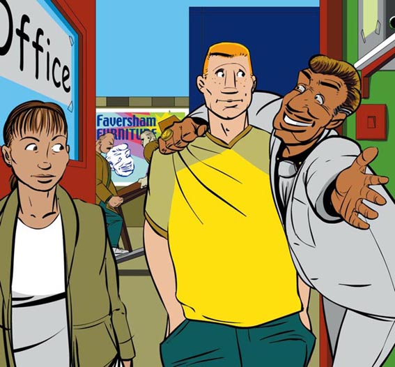
Kim and Andy drive to Dover and take the ferry to Calais. They drive off the ferry, and out of Calais. They find the motorway – and a big STOP sign.
'We need a ticket,' says Andy. He puts his hand out of the window to take the ticket; but he is too far away and the ticket goes under the truck. Andy jumps down and goes to get it.
'OK, I've got it now,' Andy calls to Kim. 'But the truck is losing oil. Not much, but we must do something about it soon.'
'OK,' says Kim. 'I can do that at the truck stop. Come on – let's go!'
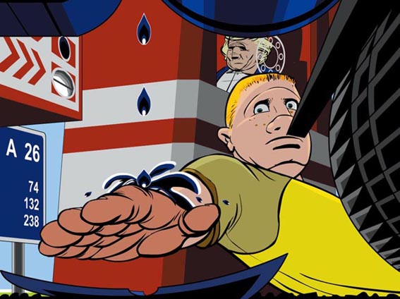
They arrive at the truck stop near Reims at about one o'clock. Kim gets under the truck.
'You're right,' she tells Andy. 'The truck is losing oil. But it isn't very bad.' Then suddenly she calls to Andy.
'Come and have a look at this.'
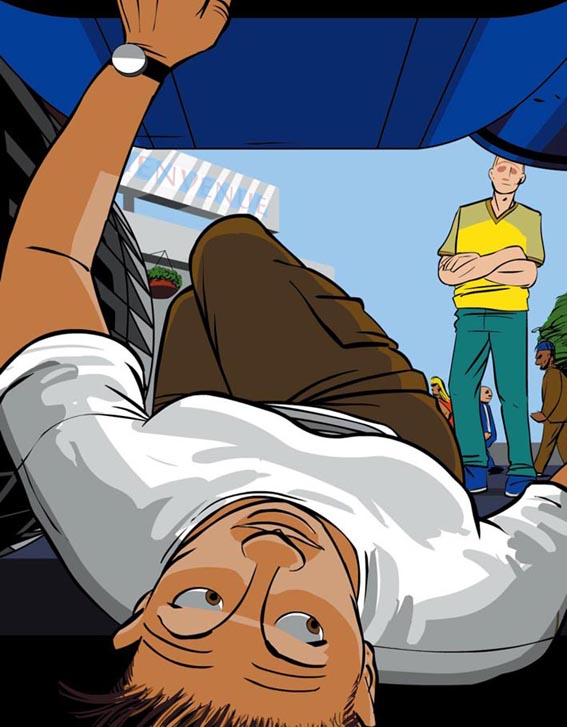
There is a box under the truck.
'Is it a sandwich box?' asks Andy. 'Perhaps Gary puts his sandwiches in it.'
'Under a hot, dirty, oily truck?' says Kim. 'Nobody does that! Oh well, I need some coffee.' She goes to the café.
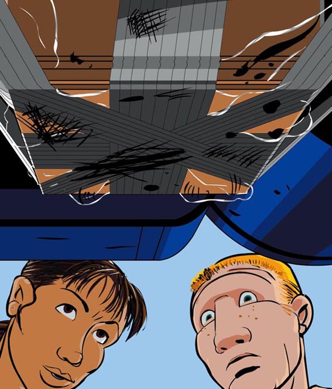
4 On the road
4
ON THE ROAD
They get into the truck again and drive along the motorway.
'Our next stop is near Dijon,' said Andy. 'Dijon is in Burgundy. They make wonderful wine there.'
'I don't want any wine,' laughs Kim, 'but I do want some coffee.'
They arrive at the truck stop just before four and sit down in the café. Suddenly Andy says, 'Someone's looking under the truck!'
Through the window of the café they see a fat man in a green shirt. He takes something out from under the truck and goes to a red car.
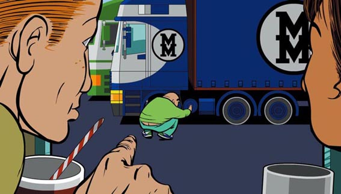
'I don't like this,' says Kim quietly. 'Let's go!'
A few minutes later, Kim looks in her mirror.
'Andy,' she says quietly, 'There's a red car behind us. And the man in the green shirt is driving. Why is he following us? He's got his parcel.'
'No, he hasn't,' says Andy with a laugh. 'He's got our sandwiches. And I've got his parcel. Here it is.'
He opens it carefully. In it are about fifty small white paper bags.
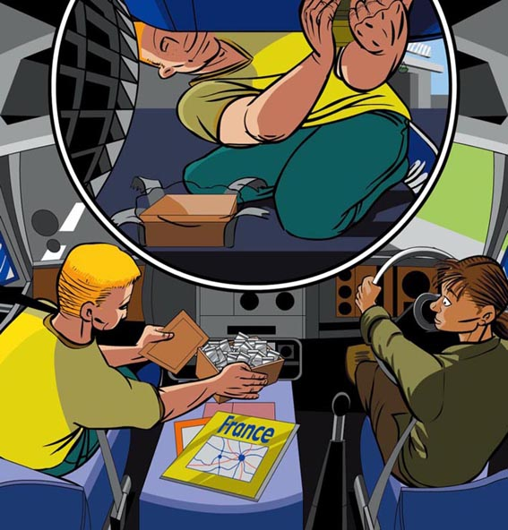
'What's this?' says Andy.
'Drugs, I think,' says Kim. 'And the man in the green shirt wants them. He doesn't want your sandwiches, and he's angry. We're in danger, Andy. I must do something.'
The red car is only a few metres behind. Kim stops suddenly. The red car runs into the back of the truck.
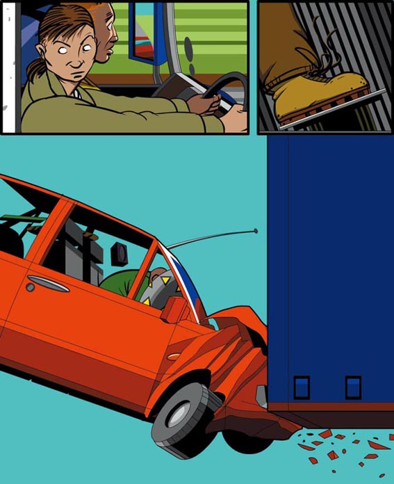
Kim drives away again very fast. In her mirror she sees the man in the green shirt standing by his car.
'He can't follow us now,' Andy says with a smile.
But the man is very angry and quickly takes out a small black mobile phone.
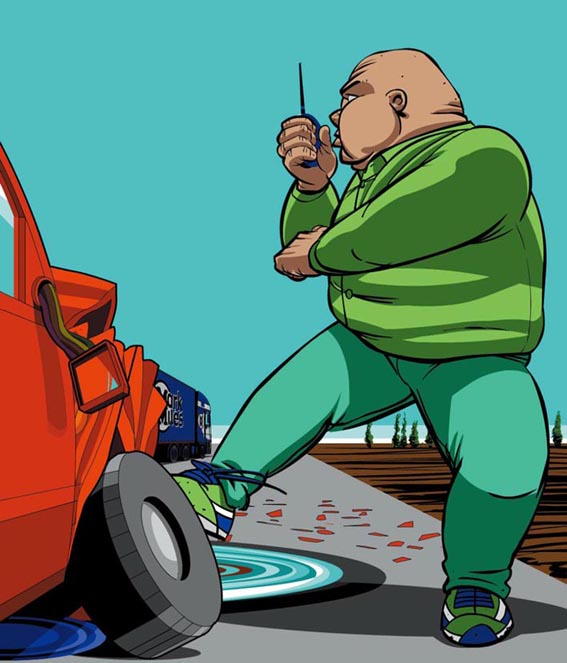
5 The rubbish dump
5
THE RUBBISH DUMP
'We must leave the motorway,' says Kim.
They take a quiet country road through small villages. Suddenly Andy sees a big sign on their left. 'Go in there!' he says.
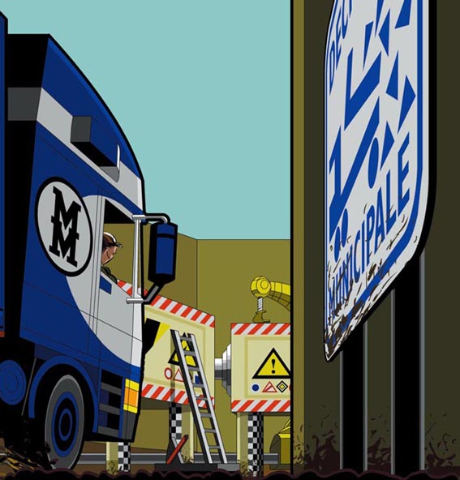
'But it's a rubbish dump. Why do you want to go there?' says Kim.
But she drives through the entrance. Andy opens his window and throws the parcel of drugs into the nearest skip.
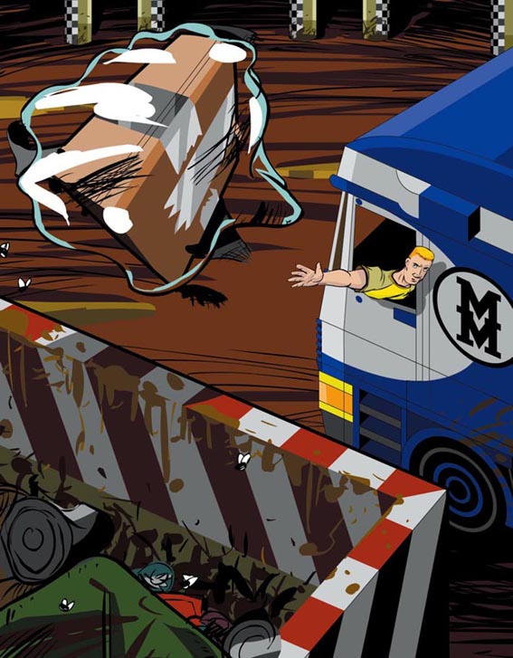
'We must phone for help,' says Andy.
But just then two men arrive in a white car. A man in a black suit is driving. The man in the green shirt is with him.
The two men leave their car across the entrance and jump out. The man in the suit has a gun.
'Now we can't drive out of here,' thinks Kim. 'Oh dear...'
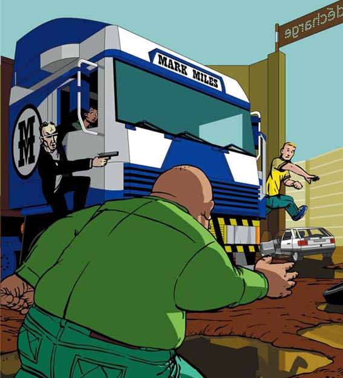
The two men run up to the truck and stand by Kim's door.
'Give me the parcel,' says the man in the black suit very quietly.
'Run, Andy!' says Kim. Quickly Andy opens his door and jumps out of the truck. He runs to the white car. The man in the green shirt follows him, but he is too fat and slow. Andy gets into the car and drives away.
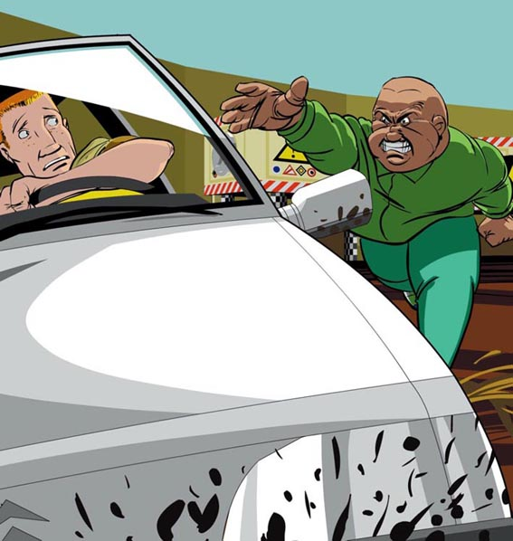
Kim opens her door suddenly. The big mirror hits the man in the suit. He falls down, and loses his gun. Quickly Kim jumps out of the truck and gets the gun.
'Your drugs are in that skip,' she says. 'Go and get them. Take your friend with you.'
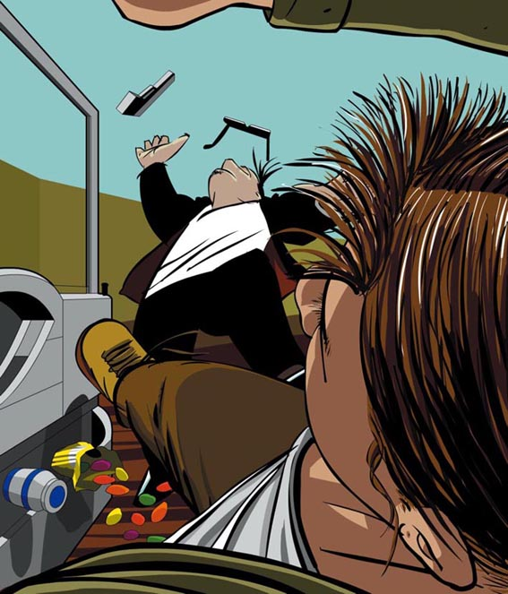
The two men go up the ladder and look down into the skip.
'Go on!' says Kim. 'You want them. Go and look for them.'
The two men jump down into the skip. Quickly Kim takes the ladder away. Now the men cannot get out.
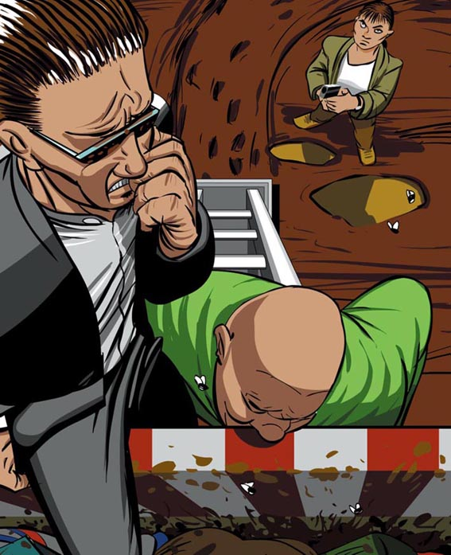
6 The police are coming
6
THE POLICE ARE COMING
Carefully Kim puts the gun in her overnight bag. Then she goes to the truck and telephones the police. A French policeman answers.
'Hullo, do you speak English?' she asks the policeman on the phone.
But Kim does not speak French, and the French policeman does not understand English.
'Where's Andy?' thinks Kim. 'He speaks French.'
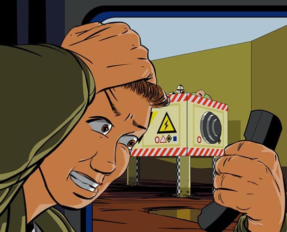
Just then a white car comes through the entrance to the rubbish dump. It stops, and Andy jumps out. He runs up to Kim.
'It's OK, Kim,' he says. 'The police are coming.'
A few minutes later a French police car arrives. Four policemen jump out. Kim gives them the gun.
'Where are the drugs?' asks one of the policemen. 'And where are the men?'
'In that skip,' says Andy with a laugh. The policemen get the ladder.
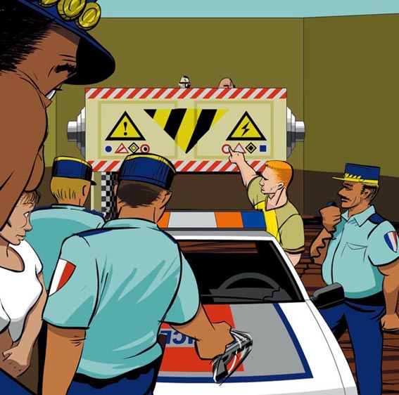
Later that evening Andy and Kim drive to Lyon with the tables. They have coffee and long French sandwiches in a café. Then they go to the wine shop. They arrive very late. A fat, little man is waiting for them. He looks angry.
'Why are you late?' asks the man.
'Well...' begins Kim.
'It's a long story,' says Andy tiredly.
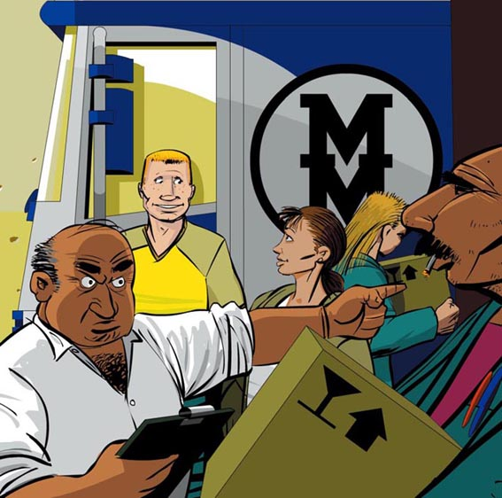
GLOSSARY 词汇表
GLOSSARY
词汇表
café n. a place where people can eat and drink 小餐馆，咖啡馆
coffee n. a hot drink 咖啡
danger n. something that can hurt you or get you into trouble 危险
dirty adj. you need to have a bath when you are dirty 肮脏的
drug n. something that the law does not allow. Some people take drugs to make them feel good 毒品
entrance n. the way into somewhere 大门，入口
fall v. go down suddenly 摔倒
ferry n. a way of getting cars and trucks across the sea 渡船
follow v. go after 跟随，跟着
gun n. something that shoots and kills people 枪
jump v. move quickly or suddenly 跳，跃
licence n. you need this paper before you can drive a car 驾驶执照
motorway n. a big road where you can drive fast 高速公路
oil n. a liquid that helps cars and trucks move 燃油
overnight bag n. a bag with sleeping and washing things 小旅行包
passport n. you need this book to travel outside your country 护照
throw v. move your arm quickly to send something through the air 抛，扔
truck stop n. a place where trucks stop and their drivers eat and drink 长途卡车服务站，公路小餐馆
wine n. an adult drink made from fruit 葡萄酒
ACTIVITIES 阅读练习
Drive into Danger
ACTIVITIES
阅读练习
ACTIVITIES
Before Reading
1 Look at the picture on the cover of the book. Now answer these questions.
1）Which word is important for the story? Choose one answer.
a □ trucks
b □ planes
c □ motorbikes
2）The story is...
a □ frightening.
b □ exciting.
c □ funny.
2 Read the story introduction and back cover of the book. Guess the answers to these questions.
1）The story happens in...
a □ America.
b □ Britain.
c □ France.
2）The end of the story is...
a □ happy.
b □ not happy.
c □ funny.
3）Kim and Andy...
a □ are brother and sister.
b □ are friends.
c □ work together.
ACTIVITIES
While Reading
1 Read Chapter 1. Are these sentences true (T) or false (F)?
1）Gary is always late for work.
T □／F □
2）Kim is a student.
T □／F □
3）Andy is Mark's son.
T □／F □
4）Gary does not often drive to France.
T □／F □
2 Read Chapter 2, and then put these sentences in the right order.
a □ At about four o'clock you must stop near Dijon.
b □ At Calais, look for signs to the A26 motorway.
c □ You need to stop at about one o'clock.
d □ Take the ferry from Dover to Calais.
e □ Get the tables from the shop in Faversham.
3 Read Chapter 3. Use these words to join the sentences together.
and but because
1）Andy and Kim arrive at Faversham. They tell the man about Gary's arm.
2）The ticket goes under the truck. Andy is too far away to get it.
3）The truck is losing oil. It isn't very bad.
4 Read Chapter 4. Are these sentences true (T) or false (F)?
1）Andy says, 'They make wonderful wine in Burgundy.'
T □／F □
2）A thin man in a black shirt takes something out from under the truck.
T □／F □
3）A red car follows them.
T □／F □
4）The truck runs into the back of the red car.
T □／F □
5 Read Chapter 5. Who says:
1）'We must phone for help.'
2）'Give me the parcel.'
3）'Run, Andy!'
4）'Your drugs are in that skip.'
6 Read Chapter 6, then answer these questions.
1）Where does Kim put the gun?
2）How do the policemen get into the skip?
3）What do Kim eat and drink in the café?
4）Why is the man in the wine shop angry?
ACTIVITIES
After Reading
1 Here are twenty short sentences. Make ten longer sentences with and, but or because.
1）Gary Slater can't drive. He has a bad arm.
2）Kim can drive. She has got a passport.
3）Truck drivers must stop every few hours. They must not go to sleep on the road.
4）Gary cannot drive today. It is OK.
5）Andy has got the ticket. The truck is losing oil.
6）Kim does not want any wine. She does want some coffee.
7）'He's got our sandwiches. I've got his parcel.'
8）Kim asks the police in English. She does not know French.
9）Andy opens his window. He throws the parcel into the nearest skip.
10）The man in the green shirt tries to follow Andy. He is too fat and slow.
2 What are they saying? Write the right answers in the spaces.
1）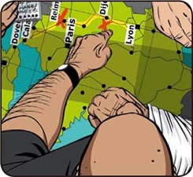
Gary is saying
_______________
2）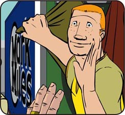
Andy is saying
_______________
3）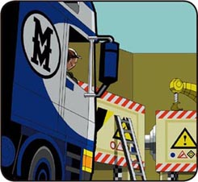
Kim is saying
_______________
4）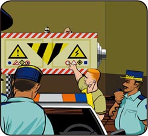
The policeman is saying
_______________
a 'Why are we going to a rubbish dump?'
b 'Where are the two men?'
c 'OK. You take the ferry from Dover to Calais. Then you drive to Lyon.'
d 'Can I go with Kim? I can speak French.'
TRANSLATION 参考译文
TRANSLATION 参考译文
Drive into Danger
驶入险境
马克·迈尔斯和他儿子安迪早上遇上了麻烦。
“加里哪儿去了？”马克问，“他一般是不迟到的。卡车准备停当了，大家都等着呢。”
之后，加里·斯莱特来到了办公室。他病了。“我胳膊受伤了，迈尔斯先生。”加里说，“真抱歉，我今天开不了车了。”
就在这时，金·帕克来了。她是个学生，她父亲在马克手下开卡车。她放假了，在马克的办公室工作。
“早上好，迈尔斯先生。”金说，“我先干点儿什么呢？”
“你会开卡车吗？”马克微微笑道，“我要从法弗舍姆运走些桌子，再从里昂运回些葡萄酒——就是缺一个司机！”
“会，我会开卡车。”金回答说，“我有驾照。”
“太好了！”马克说。他脸有喜色。“你有护照吗？”
“当然有，在家放着呢。”马克顿时倍感欣喜。
“好。你开卡车去法国好吗？这儿有点儿法国钞票，这些是全部相关文件，仔细看看吧。”
“爸爸，我能一起去吗？”安迪问，“我不会开卡车，不过我会开小轿车，会看地图。我还会说法语呢。说不定我能给金帮点忙。”
“你是想去法国吧。我明白了！好吧，你们俩一起去。赶紧回家拿护照、小旅行包，再带些三明治。卡车上有睡袋，还有一部手机。你们回来后找加里一起看看地图。他每星期都开车去法国，他会告诉你们该怎么做。”
“去法弗舍姆那家店取桌子。”加里说，“然后从多佛尔乘渡船去加来。到了加来，注意看路标，走A26号高速公路。这条路好，跑得快。”
“听着，这点很重要。所有卡车司机都必须每4小时停车45分钟。”
“我知道。”金回答。
“好。法国每条公路上都有卡车服务站。1点左右，你们得在这儿的这个卡车服务站停上15分钟。”他在地图上打了个叉。
“别在车上待着；下来走走，喝点儿咖啡。开车时可不要睡着了。4点左右，你们得在第戎附近，就是这儿再停一次。”加里又在地图上打了个叉。
“这个卡车服务站的咖啡馆咖啡很好喝。祝你们好运，开车要当心。”加里说。
待安迪和金上了卡车，开车走后，加里打了个重要的电话。
“喂，我是加里。我今天开不了车，不过告诉保罗不要紧。卡车1点钟停在兰斯附近，4点钟停在第戎。找一个棕色头发的女孩儿和一个穿黄衬衣的男孩儿。”
安迪和金抵达法弗舍姆。他们告诉接待的男子，加里伤了胳膊。
“桌子都准备好了。我的伙计会负责装车，我们可以在我的办公室里坐着等一会儿。你们要不要来点儿咖啡？”男子问。
安迪和金下了车，走进办公室。
金和安迪驾车来到多佛尔，乘渡船去加来。之后他们开车下了渡船，驶离加来。他们找到了A26号高速公路和一个大大的停车标志。
“我们得取张票。”安迪说。他将手伸出车窗外取票，但因为离得太远，票掉到了卡车底下。安迪跳下车去捡票。
“好，我捡起来了。”安迪大声对金说，“不过车漏油了。漏得不多，但我们还是得尽快修修。”
“好。”金说，“等到了卡车服务站我来修。来，我们走吧！”
1点钟左右，他们到达兰斯附近的那个卡车服务站。金钻到了卡车底下。
“你说得没错。”她对安迪说，“这车的确是在漏油，不过不太严重。”接着，她突然冲安迪叫喊起来。
“快来看看这里！”
卡车底下有个盒子。
“这个盒子是不是装三明治用的？”安迪问，“说不定加里把他的三明治放在里面。”
“放在热烘烘、脏兮兮、油腻腻的卡车底下？”金说道，“谁都不会这么干！嗯，我想喝点儿咖啡了。”她向咖啡馆走去。
他们回到卡车上，沿着高速公路前进。
“我们下一站在第戎附近。”安迪说，“第戎在勃艮第。那里的葡萄酒好极了。”
“我不想喝葡萄酒，”金笑着说，“不过我倒是想喝点儿咖啡。”
将近4点时，他们到了卡车服务站，在咖啡馆里坐下。突然，安迪说：“有人在往卡车底下看呢！”
透过咖啡馆的窗户，他们看见一个穿绿衬衣的胖子。他从卡车底下取出了什么东西，然后走向一辆红色轿车。
“我不喜欢这种事情。”金轻声说，“我们走吧！”
过了一会儿，金看了看后视镜。
“安迪，”她轻声说，“有辆红色轿车跟着我们。开车的就是那个穿绿衬衣的男人。他为什么要跟着我们？他已经拿到了他的包裹。”
“不，他没有拿到。”安迪笑了一声，“他拿走的是我们的三明治。他的包裹在我这儿呢。瞧！”
他小心翼翼地打开包裹，里面装着50来个白色小纸袋。
“这是什么？”安迪说。
“我觉得是毒品。”金回答，“那个穿绿衬衣的人想要这个，可不是你的三明治。他气坏了。我们遇到危险了，安迪。我得想个办法。”
红色轿车离他们只有几米。金来了个急刹车。红色轿车一头撞进了卡车尾部。
金又风驰电掣般驾车而去。她从后视镜里看到那个绿衬衣男子站在轿车旁。
“他现在没法跟踪我们了。”安迪微笑着说。
但是那人很生气，他迅速掏出一部小巧的黑色手机。
“我们得下高速公路。”金说。
他们选了一条僻静的乡间公路，穿行在小村庄之间。突然，安迪看到他们左边有个大指示牌。“开进去！”他说。
“这是个垃圾场，你去那儿干什么？”金说。
不过她还是从入口开了进去。安迪打开车窗，将毒品包裹扔进了最近的大垃圾箱。
“我们得打电话求救。”安迪说。
然而就在这时，一辆白色轿车开了进来，车上坐着两名男子。开车的那个穿着黑色西装，绿衬衣男子坐在他旁边。
两名男子把车横在入口，跳了下来。穿西装的男子拿着一把枪。
“这下我们可开不出去了。”金心里想，“天哪……”
两名男子奔向卡车，在金那边的车门外停了下来。
“把包裹给我。”黑西装男子沉声说。
“快跑，安迪！”金说。安迪迅速打开车门，跳下卡车，奔向白色轿车。绿衬衣男子追了上去，但是他长得太胖，跑不快。安迪钻进轿车，驾车离去。
金突然推开车门，大大的后视镜撞上了黑西装男子。他摔倒在地，枪脱了手。金急忙跳下卡车，捡起手枪。
“你们的毒品在那个大垃圾箱里。”金说，“去拿吧，和你的朋友一起去。”
两名男子顺着梯子爬上去，向大垃圾箱里张望。
“去吧！”金说，“你们想要毒品吧，去找呀。”
两名男子跳进了大垃圾箱。金飞快地搬走梯子，这下他们就出不来了。
金小心翼翼地把枪放进自己的旅行包，然后她走向卡车，打电话报了警。接电话的是一名法国警察。
“喂，您会说英语吗？”金问电话那头的警察。
可是金不会说法语，而那名法国警察听不懂英语。
“安迪在哪儿呢？”金心想，“他会说法语。”
就在这时，一辆白色轿车从垃圾场的入口开了进来。车停住后，安迪跳了下来，向金跑去。
“没事了，金。”他说，“警察就来。”
不一会儿，来了一辆法国警车。车上跳下来四名警察。金把枪交给了他们。
“毒品在哪儿？”一名警察问，“那两个家伙呢？”
“在那个大垃圾箱里。”安迪笑了一声。警察搬来了梯子。
当晚晚些时候，安迪和金载着桌子到了里昂。他们在一家咖啡馆喝了咖啡，吃了长长的法式三明治。之后他们又前往那家卖葡萄酒的店。他们到达时，夜色已深。一个胖墩墩的小个子男人正在等他们。男人满脸怒色。
“你们怎么迟到了？”男人问道。
“呃……”金开口说。
“说来话长。”安迪疲惫地说。
封底
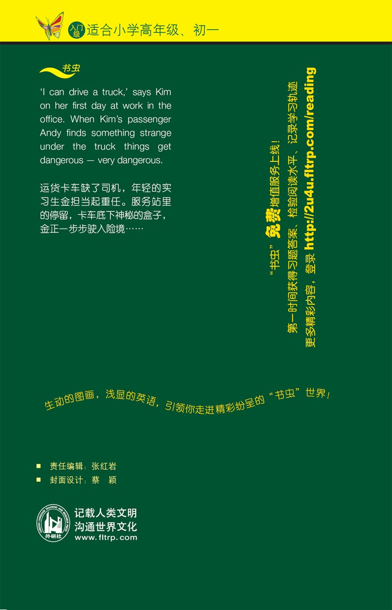